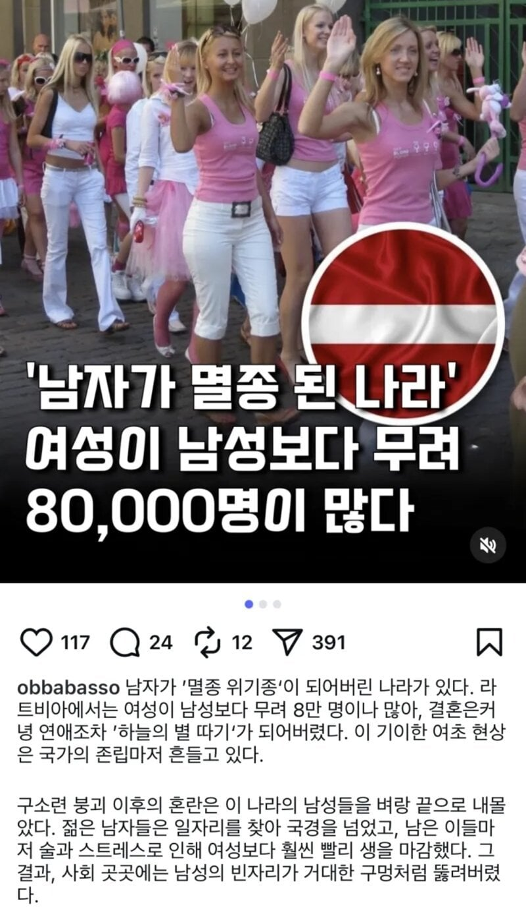

남자가 멸종된 나라
댓글
여권어딨어
세르게이, 자진 입대를 환영한다!
돈바스에서 펼쳐지는 남북대항전 ㄷㄷ
당신에게 여권크기의 아이폰 듀오를
여권에 줄그어졌는디요?
려권내라우
국내 스윗한것들과 페미들 싹다 저기로 가면 되겟네
러시아의 아성에 가려져서 그렇지, 리투아니아/라트비아, 그리고 에스토니아도 주당들 개 많음. 술도 괜찮은 술들 많이 나오고. 라트비아 인구가 끽해야 180만명인데 8만명이나 더 많은건 여초가 상당하다는 뜻이긴 한데, 그렇다고 가임기 여성이 많은 건 아니고 저어기 농사짓거나 소치는 시골청년들은 아내가 없어서 자살많이하고 술마이마셔서 빨리죽음...
저 동네도 시골서 농사짓는 남자는 결혼 못하고 노총각으로 늙어죽는구나
그래서 우구라이나에서 아내를 얻어오는 경우도 종종 있었는데, 지금은 그것도 어렵게 됐지
세상에 전쟁전에도 우크라이나가 저 국가보다 1인당 GDP 밀렸던 거임? 여성 결혼이민이 보통 못사는 국가에서 잘사는 국가로 가는 거니까
리투아니아/라트비아/에스토니아 등 발트 3국은 의외로 우크라이나 소득수준의 5배정도 되고, 유로존임... 22년도 기준으로 대략 22~24k$ 정도 나왔고, 지금은 28~36k$ 나오네. 22년도 기준 우크라이나는 4100달러. 지금은 7천달러 정도
우크라이나는 전쟁전에도 유럽최빈국이였음.
유럽 경제 최하위국가.
체급상 지금까지 전쟁 끌어온 게 기적이긴 하네
체급으론 3일컷인데
그걸 유럽과 미국이 멱살잡고 케어중
당장 스타링크 제한거니까 다죽는다고 말나왔잖아
뉴질랜드가 아니었네
마블을 너무 많이 봤나 순간 라트베리아로 봤네
둠박사 ㄷㄷㄷㄷ
둠님이 니 친구냐!?
가혹한 남성의 삶이란 ㅠㅠ
개붕이들 다들 짐싸
이런거 실제로 보면 대부분 고령 남녀 인구가 차이나는거던데
거대한구멍? 제가 박아보겟습니다
ㅋㅋㅋㅋㅋㅋㅋ나무위키 인구분포 보니까 40-50대 이상부터 여성이 폭발적으로 증가함
그 이전 나이대는 오히려 남자가 약간 더 많음
할머니 취향이면 노려봐라
할카스양적완화 ㄷㄷㄷ
남성의 빈자리
거대한 구멍
미테란트 공화국의 현실판인가
강철의 누이들 ㄷㄷ
러시아가 아니었네
신기하네
동유럽국가들이 대부분 여초인데 돈벌러 서유럽 많이가서 그렇다하던데 + 남자술및마초
희망 가지지마라
페미들의 천국이기